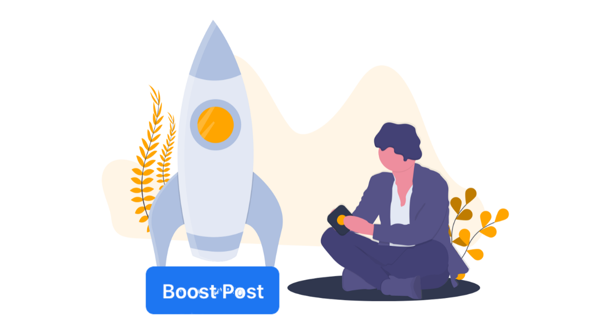
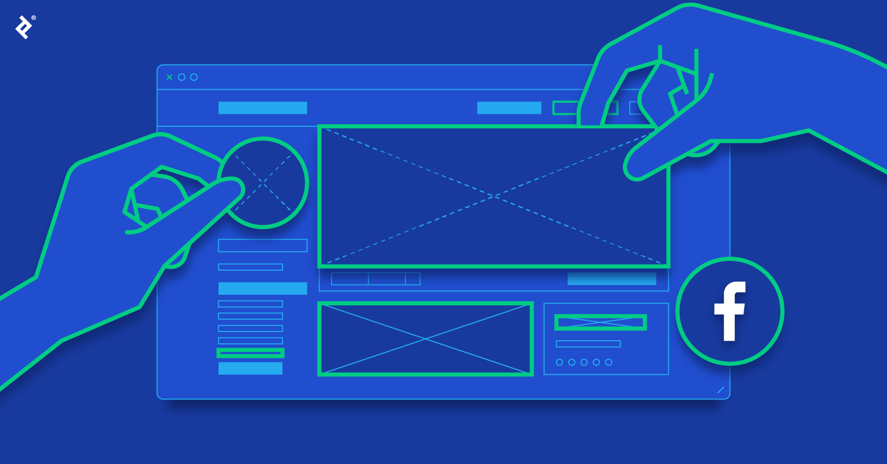
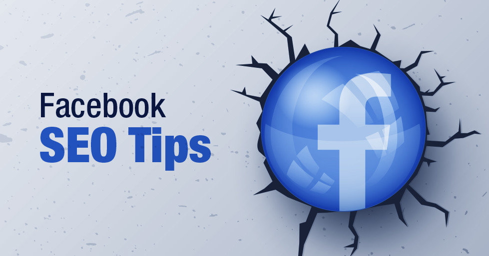
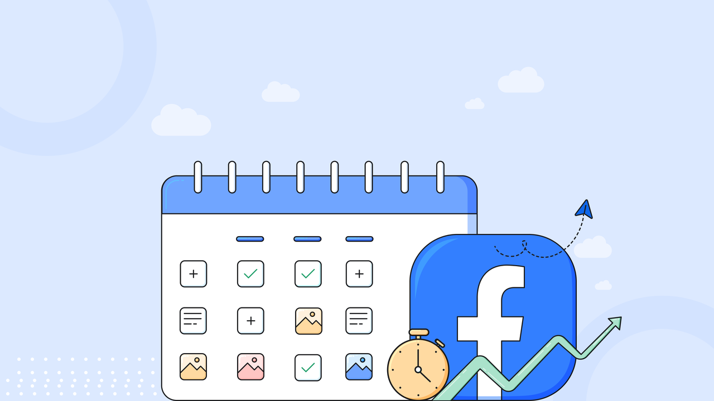
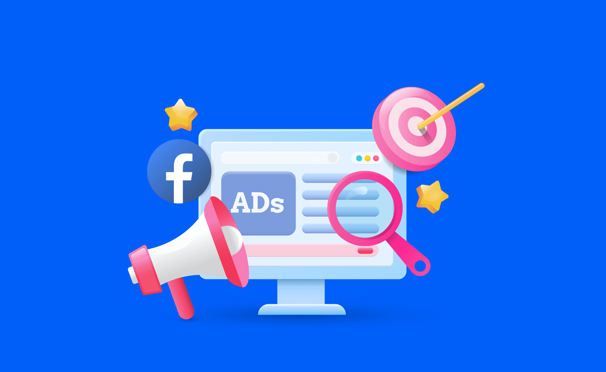
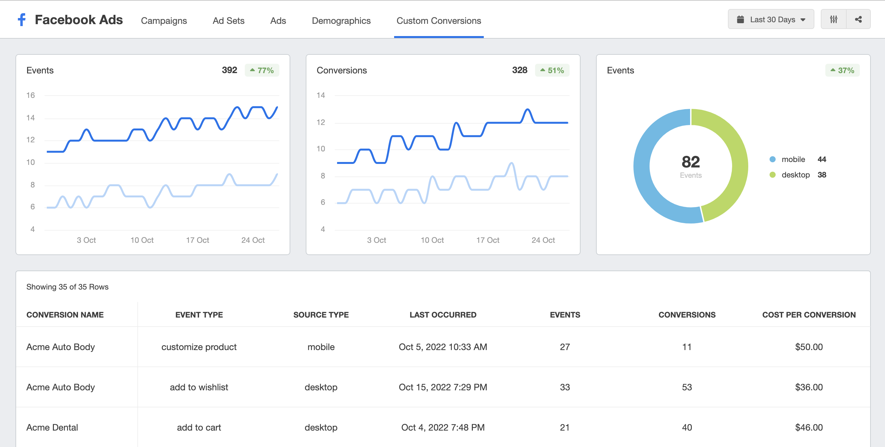
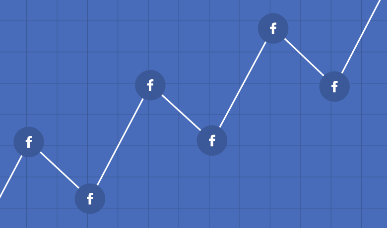

როდესაც გვინდა ავაწყოთ Facebook - ზე ჩვენი ბიზნეს იდეა ჩვენ აუცილებლად უნდა გავითვალისწინოთ ჩვენი ბიზნეს იდეეის სახელი ( ბრენდი )
და მასზე არსებული ინფორმაცია რომელიც გვინდა რო ჩვენს მომხმარებლებს მივაწოდოთ
დავისახოთ მიზანი ვაკონტროლოთ ჩვენი შედეგები და გავზარდოთ ყოველ თვე ჩვენი ბიზნეს მომხმარებლები
მაგალითად :
პირველი თვე გაიზრდება - 20%
მეორე თვე გაიზრდება - 35%
მესამე თვე გაიზრდება - 50%
მეოთხე თვე გაიზრდება - 65%
მეხუთე თვე გაიზრდება - 80 %
მექვსე თვე გაიზრდება - 100%

Facebook - ფეიჯის შექმნა
შევქმანთ ფეიჯი და შევავსოთ ჩვენს ბიზნესზე არსებული სრული ინფორმაცია
შევავსოთ ფოტოებით ვიდეოებით და მოვხიბლოთ ჩვენი ბიზნეს მომხმარებლები.
გამოვიყენოთ უნიკალური ვიდეოები და ფოტოები მაღალი ხარისხის სტანდარტით.
შევქმნათ ჩვენი ბიზნეს ლოგო ასევე ჩვენი ხელით გაკეთებული დიზაინი ეფექტურობისთვის.

გვერდის პარამეტრების ოპტიმიზაცია
გვერდის როლები:
როლების მინიჭება (ადმინისტრატორი, რედაქტორი, მოდერატორი) გუნდის პასუხისმგებლობებიდან გამომდინარე.
გვერდის ხილვადობა:
დარწმუნდით, რომ თქვენი გვერდი დაყენებულია (საჯაროზე) რათა ნებისმიერმა შეძლოს მისი პოვნა და თვალყურის დევნება.

პოსტების შეთავაზება
შევქმნათ გამოსაქვეყნებელი პოსტების კალენდარი
შექმენით გამოქვეყნების განრიგი
შინაარსის კალენდარი:
შეიმუშავეთ შინაარსის კალენდარი, სადაც აღწერილია როდის და რას გამოაქვეყნებთ თანმიმდევრულობის შესანარჩუნებლად.
სიხშირე:
გადაწყვიტეთ პოსტების სიხშირე (მაგ., ყოველდღიურად, ორ კვირაში) თქვენი აუდიტორიის ჩართულობის შაბლონებიდან გამომდინარე.
მაგალითად :
ორშაბათი (პირველი პოსტი)
სამშაბათი (პირველი პოსტი)
ოთხშაბათი (პირველი პოსტი)
ხუთშაბათი (პირველი პოსტი)
პარასკევი (პირველი პოსტი)
შაბათი (პირველი პოსტი)
კვირა (პირველი პოსტი)

მეგობრების მოწვევა
მოიწვიე მეგობრები საწყის ეტაპზე , შეუერთი კომენტარებს ლაიქებს და შეუწყე ხელი რო მიიღონ თქვენს ბიზნესში კომფორტული და კარგი გარემო.
ეს არის ეფექტური გზა საწყისი Follow - ბის მოსამატებლად.
Facebook - დიზაინი
შექმენით თქვენი უნიკალური დიზაინი ააწყე გრაფიკული პოსტები სხვადასხვა იდეებით.
გამოიყენე ფოტოშოპის მზგავსი პლატფორმები.
ყოველ კვირას გააუმჯობესე თქვენი Facebook ვიზუალი და დახვეწე დიზაინი.
Facebook რეკლამების აწყობა
რეკლამის მენეჯერი:
შედით Facebook Ads Manager-ზე თქვენი სარეკლამო კამპანიების შესაქმნელად და სამართავად.
დამიზნება:
განსაზღვრეთ თქვენი აუდიტორია დემოგრაფიის, ინტერესებისა და ქცევის მიხედვით.
რეკლამის შექმნა:
შექმენით სარეკლამო კონტენტი, რომელიც შეესაბამება თქვენს მიზნებს, მათ შორის ვიზუალს, კოპირებას და ქმედებისკენ მოწოდებას.

მონიტორინგი და ანალიზი
მეტრიკა:
თვალყური ადევნეთ ძირითად მეტრებს, როგორიცაა შთაბეჭდილებები, დაწკაპუნების ტარიფები და კონვერტაციები.
კორექტირება:
თქვენი რეკლამის ოპტიმიზაცია ეფექტურობის მონაცემებზე დაყრდნობით, საჭიროებისამებრ დაარეგულირეთ მიზნობრივი, ბიუჯეტი ან შინაარსი

შეაფასეთ და გაიმეორეთ
შესრულების მიმოხილვა:
რეგულარულად გადახედეთ თქვენი გვერდის შესრულებას და რეკლამებს თქვენი მიზნების საწინააღმდეგოდ.
გამოხმაურება:
შეაგროვეთ გამოხმაურება თქვენი აუდიტორიისგან და განახორციელეთ გაუმჯობესება მათი შენიშვნების საფუძველზე.
განახლებები:
განუწყვეტლივ განაახლეთ თქვენი შინაარსი და სტრატეგიები, რომ დარჩეთ შესაბამისი და ეფექტური.
